Results
Maze2D — Random latents
Trajectories generated with random latents. We use a model where the number of latent dimensions $k$ and the number of primitives $n$ are set to $1$. For each trial, we sample a latent $z \sim \mathcal N(0,1)$ and plot the trajectory generated by $\epsilon(\mathbf{s}_0, \text{Enc}(\mathbf{z}))$. The trajectories vary, while successfully navigating the maze. This demonstrates that the model learns to represent end state locations in its latent space.
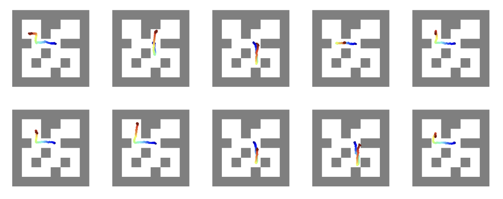
We study generating new motion trajectories on the MOCAP dataset. At test time, models are given only a few demos. Motion generated by our method visibly demonstrates the task concept more accurately.
MOCAP (3-shot) — Jumping Jacks

BC

In-context

Language

VAE

FTL-IGM
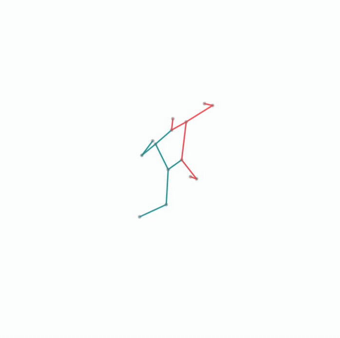
Ours
MOCAP (3-shot) — Breast Stroke

BC

In-context

Language

VAE

FTL-IGM
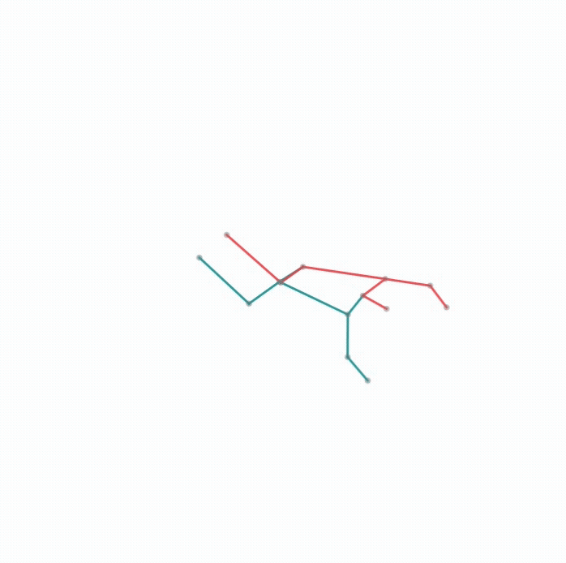
Ours
Driving — Success rates
Quantitative success rates across tasks.
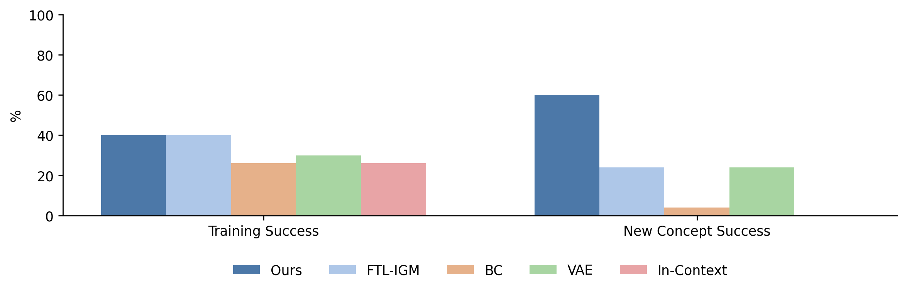
Driving — Training tasks
Samples generated by model on training driving tasks.
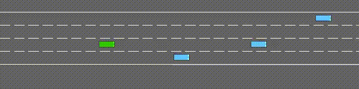
Highway
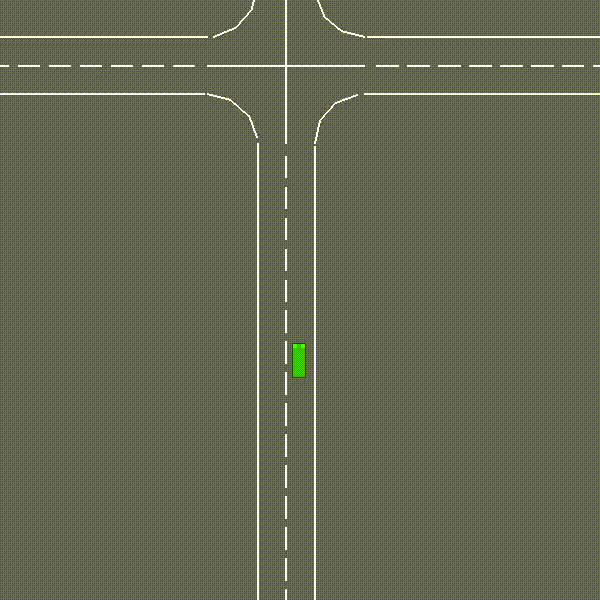
Intersection
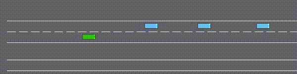
Merge
Driving — New tasks (1-shot)
Samples generated by model on new tasks (1-shot).
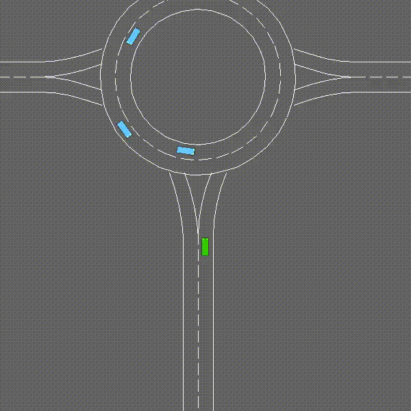
Roundabout
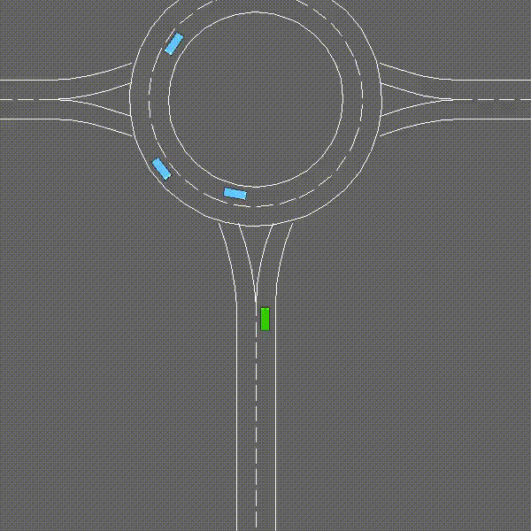
Roundabout
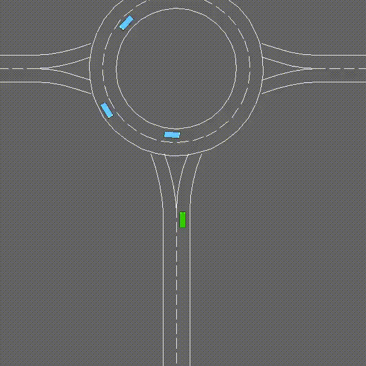
Roundabout
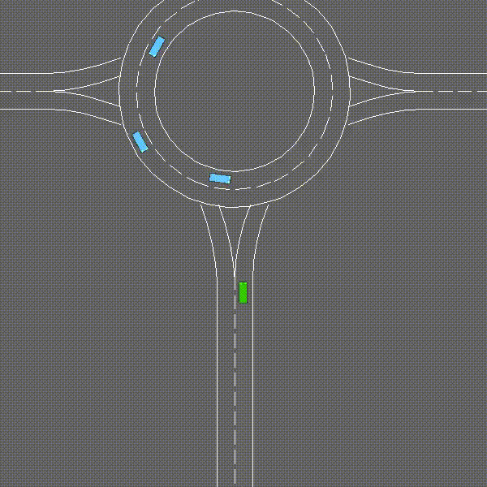
Example of a failure case in the test task. How is anyone supposed to avoid that car? Much of the remaining imperfections in performance result from unavoidable collisions like this